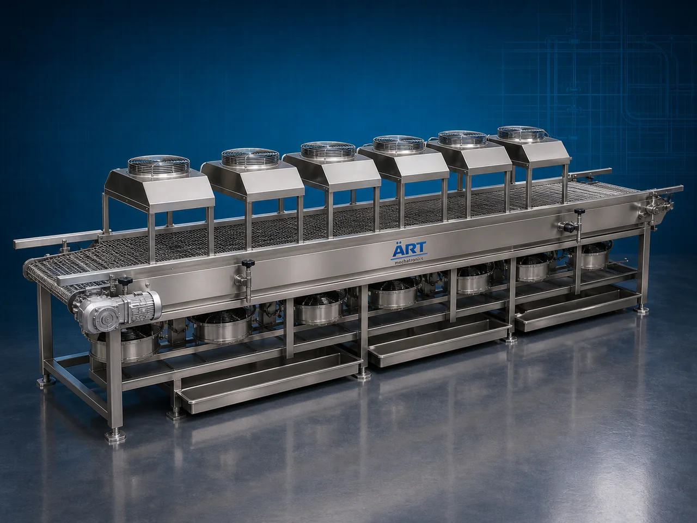

Cooling Conveyor Machine (Industrial Product Cooling Conveyor System)
A Cooling Conveyor Machine, also known as a Cooling Conveyor System, Industrial Product Cooling Conveyor, Conveyor Cooling Tunnel, or Continuous Cooling Line, is an advanced industrial cooling solution designed for rapid product cooling, heat dissipation, temperature stabilization, moisture control, and continuous conveyorized cooling operations across food processing, bakery, confectionery, snacks, pharmaceuticals, chemicals, plastics, and industrial manufacturing industries.

About the Cooling Conveyor
Cooling conveyor systems are widely used for:
- Product cooling operations
- Conveyorized heat dissipation
- Snack and namkeen cooling
- Bakery product stabilization
- Confectionery cooling systems
- Industrial process cooling
- Packaging line temperature reduction
- Continuous production line cooling
The machine improves:
- Product quality and texture
- Cooling efficiency
- Production productivity
- Product stability
- Moisture control
- Packaging efficiency
- Industrial automation performance
Industrial cooling conveyor machines use:
- High-efficiency air circulation systems
- Conveyor synchronized cooling technology
- Ambient or chilled air cooling systems
- PLC and HMI automation controls
- Stainless steel hygienic conveyor structures
to continuously cool products while maintaining product quality, texture, and processing consistency with superior efficiency and high industrial productivity.
Cooling conveyor machines are widely used in industries such as:
Food processing industries Snack manufacturing industries Bakery industries Confectionery industries Pharmaceutical industries Chemical industries Plastic industries Industrial manufacturing industries
where controlled cooling, continuous production, and temperature stabilization are essential.
The machine is highly suitable for:
- Snack cooling operations
- Bakery product cooling
- Conveyorized food stabilization
- Packaging line cooling
- Industrial product temperature reduction
- Continuous process cooling systems
ART Mechatronics offers high-performance cooling conveyor machines, engineered for continuous industrial operation, hygienic product handling, energy-efficient cooling, and reliable long-term industrial productivity.
Working Principle of Cooling Conveyor Machine
- 1. Product Feeding & Conveyor Transfer Process Hot products are continuously transferred onto conveyor system after cooking, frying, baking, drying, or processing operations.
- 2. Air Circulation & Cooling Process Machine circulates ambient or chilled air through blowers and cooling systems across moving products on conveyor belt for rapid heat dissipation.
Advanced airflow technology ensures uniform and controlled cooling operations.
- 3. Product Cooling & Stabilization Operation Machine handles cooling of: ✔ Namkeen and snacks ✔ Bakery products ✔ Confectionery items ✔ Fried food products ✔ Pharmaceutical products ✔ Chemical materials ✔ Plastic components ✔ Industrial processed products
accurately and continuously.
- 4. Heat Removal & Temperature Stabilization Process Machine performs: Rapid cooling Temperature stabilization Moisture reduction Product conditioning Heat dissipation Continuous cooling
for efficient industrial production and packaging operations.
- 5. Intelligent Automation & Hygiene Integration Optional systems include: Chilled air systems Dust extraction systems Variable speed conveyor systems HEPA filtration systems Remote monitoring systems
- 6. Finished Product Discharge Cooled products discharged automatically for: Packaging operations Storage systems Quality inspection Cold chain transfer Export shipment handling
Types of Cooling Conveyor Machines
- 1. Ambient Cooling Conveyor Machine Designed for: ✔ General industrial product cooling applications
- 2. Chilled Air Cooling Conveyor System Suitable for: ✔ Rapid cooling and temperature-sensitive product operations
- 3. Spiral Cooling Conveyor Machine Uses: ✔ Space-saving continuous industrial cooling systems
- 4. Mesh Belt Cooling Conveyor Designed for: ✔ Snack and bakery cooling operations
- 5. Tunnel Type Cooling Conveyor Machine Suitable for: ✔ High-capacity industrial process cooling applications
- 6. Fully Automatic Industrial Cooling Conveyor System Designed for: ✔ Complete industrial cooling and packaging automation lines
Industries Using Cooling Conveyor Machines
🍟 Snack Manufacturing Industry Namkeen, chips, pellets, and fried snack cooling systems. 🍞 Bakery Industry Bread, biscuits, cakes, and baked product cooling operations. 🍬 Confectionery Industry Chocolate, candies, and sugar product stabilization systems. 🍅 Food Processing Industry Cooked and processed food temperature reduction systems. 💊 Pharmaceutical Industry Tablet and medicinal product cooling operations. ⚙️ Industrial Manufacturing Industry Industrial product heat dissipation and process stabilization systems.
Features & Advantages
- High-efficiency continuous cooling operation
- Uniform product temperature stabilization systems
- Hygienic stainless steel industrial construction
- PLC and automation control systems
- Improves product quality and packaging efficiency
- Reduces moisture and product deformation
- Supports multiple industrial food and material applications
- Reliable long-term industrial performance
- Smooth integration with industrial production lines
Technical Highlights
Machine Type: Cooling conveyor machine Industrial cooling conveyor system Product cooling tunnel Material Compatibility: Snacks and namkeen Bakery products Confectionery items Processed foods Pharmaceutical products Industrial materials Integration: Air circulation systems Conveyor belt systems Cooling blowers Chilled air systems Features: PLC control system Touchscreen HMI Stainless steel construction Variable speed conveyors Temperature monitoring systems Applications: Product cooling Heat dissipation Temperature stabilization Moisture reduction Packaging preparation Continuous production cooling Automation: Semi-automatic Fully automatic industrial systems
Turnkey Cooling Conveyor Solutions
ART Mechatronics offers: Complete cooling conveyor systems Automatic product cooling solutions Industrial process stabilization systems Packaging line integration systems Installation & commissioning After-sales service & AMC
Why Choose Art Mechatronics
Expertise in industrial cooling and automation systems Customized conveyor cooling solutions for multiple industries High-performance and energy-efficient cooling technology Advanced PLC and automation systems Proven industrial production performance across sectors
Applications
Snack Manufacturing Plants Bakery Processing Facilities Confectionery Manufacturing Units Food Processing Industries Pharmaceutical Manufacturing Plants Industrial Production Facilities
Industries that use the Cooling Conveyor
Related Process Equipment machines
Get pricing & specs for the Cooling Conveyor
Share the product, target capacity, current process and plant location. These details help our engineers discuss the right machine or line configuration.
One partner, from design to start-up
ART Mechatronics designs, manufactures, installs and commissions your Cooling Conveyor solution with regional presence in India, UAE and Thailand.